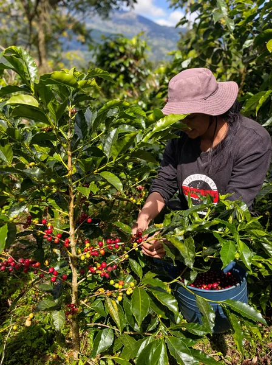
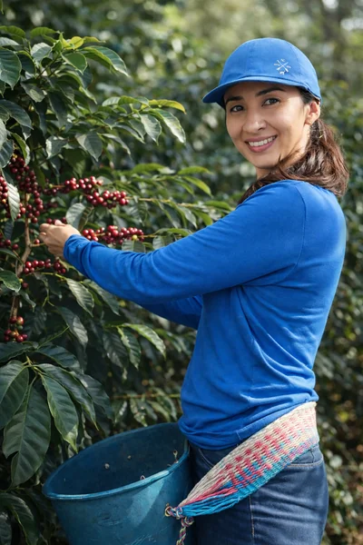
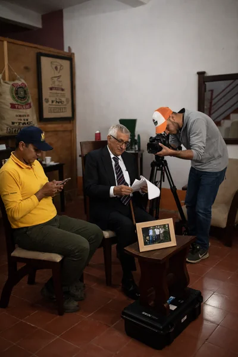
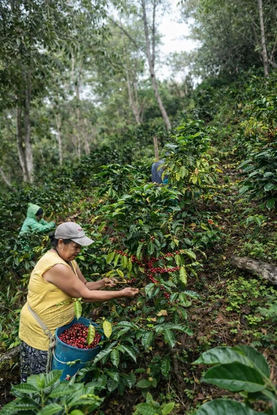

Nuestra esencia
Nacimos con un propósito claro: ser referentes en la producción de café de alta calidad, respetando la naturaleza y honrando nuestras raíces. Creemos en una caficultura responsable, donde la sostenibilidad no es una opción, sino un compromiso, y donde la mujer tiene un rol protagónico en cada etapa del proceso.
Nuestra Mision
Nuestra misión es transformar cada grano en una experiencia única. Desde nuestra granja ecológica, cuidamos cada detalle: la siembra, la cosecha, el procesamiento y hasta el momento en que el café llega a tu taza o te recibe en nuestro espacio de hospedaje. Todo lo que hacemos está guiado por la excelencia, el respeto por el entorno y el amor por lo que somos.
Descubrir nuestros cafés
Cultivo

